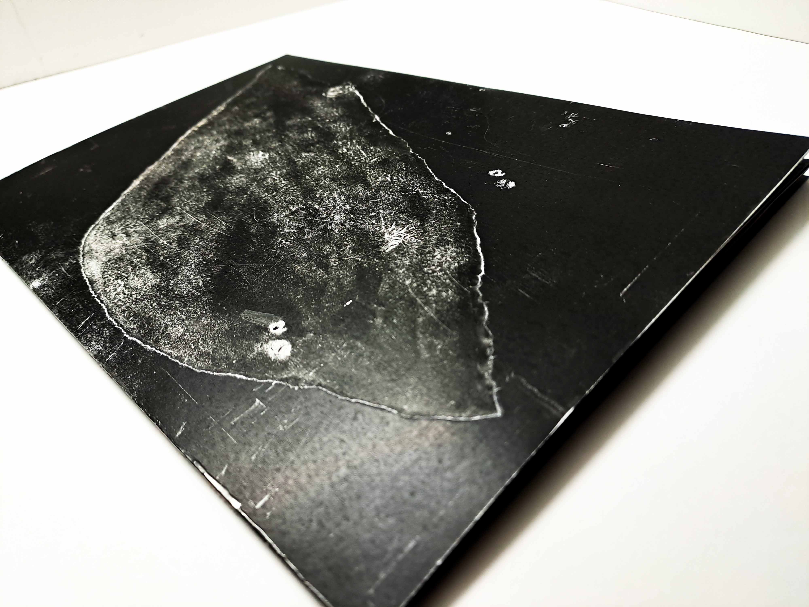
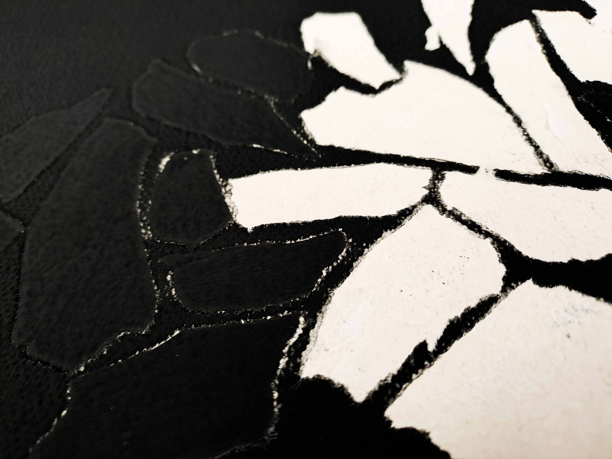
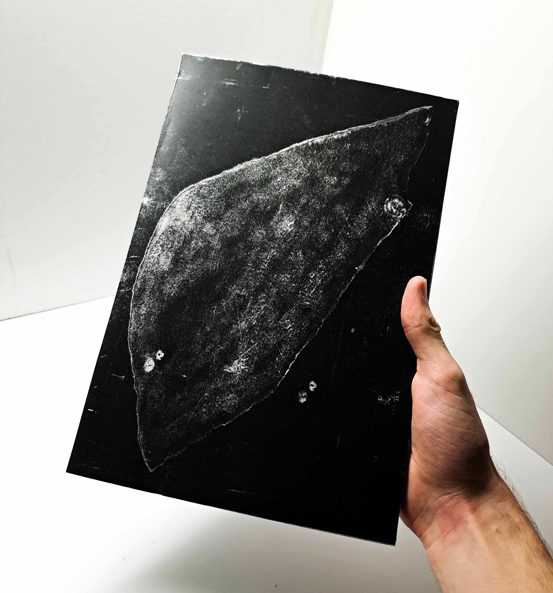
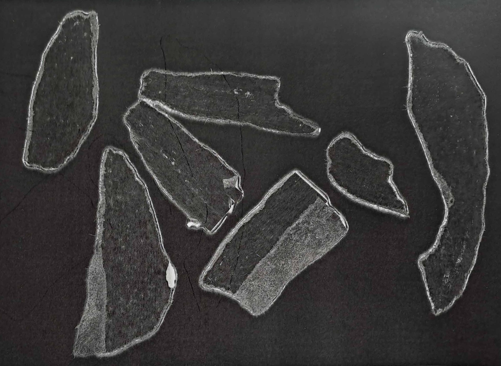
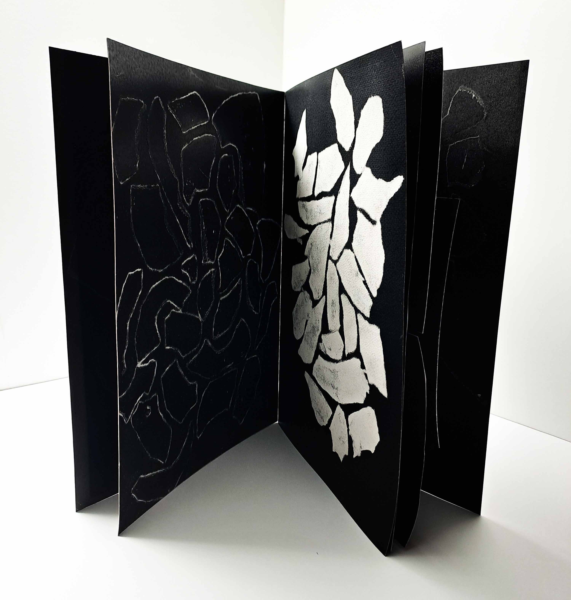
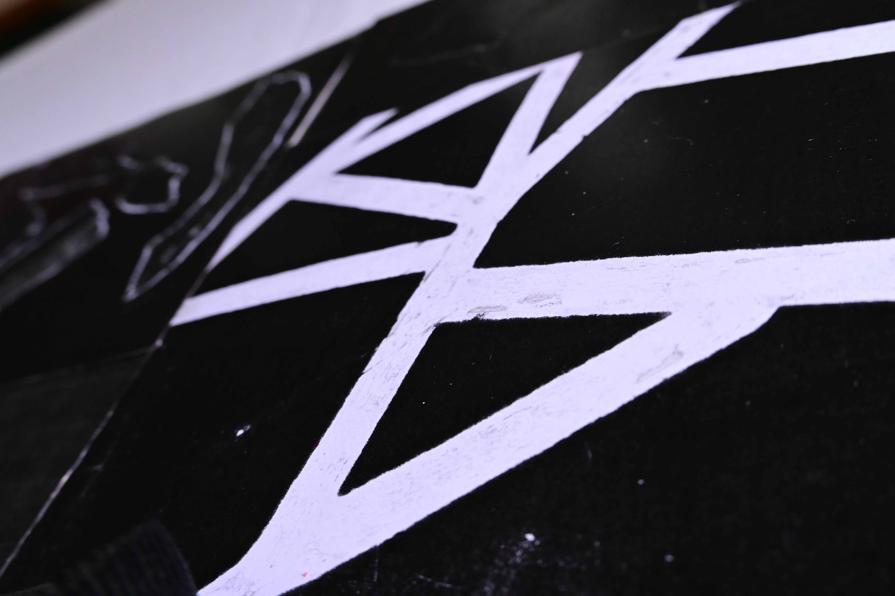

PRINT THE ENVIRONMENT
Experimentation with printing systems to represent a natural phenomenon :
soil cracking.
Lack (insufficient water, drying out)
Border creation (insufficient water leads to the creation of cracks between the earth plates)
Pattern (the cracking spreads over a large area and creates a kind of pattern)





